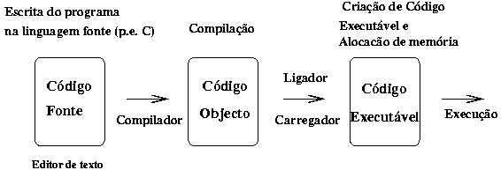
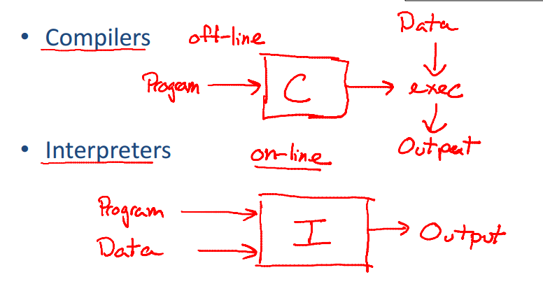
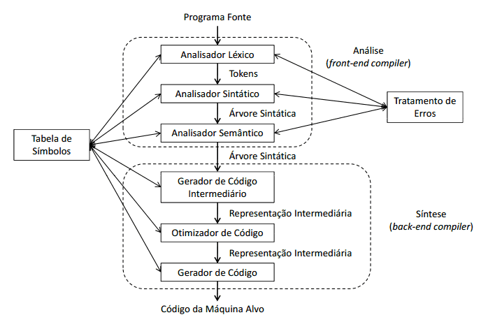

Os softwares para os primeiros computadores foram escritos principalmente em linguagem assembly por muitos anos. As linguagens de alto nível de programação não foram inventadas até que os benefícios de ser capaz de reutilizar software em diferentes tipos de CPUs passassem a ser significativamente maiores do que o custo de se escrever um compilador. A capacidade de memória muito limitada dos primeiros computadores também criava muitos problemas técnicos na implementação de um compilador.
No final da década de 1950, as linguagens de programação independentes de máquina foram propostas. Posteriormente, vários compiladores experimentais foram desenvolvidos. O primeiro compilador foi escrito por Grace Hopper,[8] em 1952, para a linguagem de programação A-0. Antes de 1957, foram desenvolvidos esforços e várias contribuições ao desenvolvimento de linguagens de alto nível foram feitas. Entre estes, o desenvolvimento da Short Code (UNIVAC), Speedcoding no IBM 701, o Whirlwind, o BACAIC e o PRINT. A equipe de desenvolvimento do FORTRAN liderada por John Backus na IBM é geralmente creditada como tendo introduzido o primeiro compilador completo em 1957 (embora tenha ocorrido simultaneamente o desenvolvimento do algebraic translator de Laning e Zierler). O COBOL é um exemplo de uma linguagem da primeira geração que compilava em múltiplas arquiteturas, em 1960.
A construção de compiladores abrange diversas áreas de estudo em Ciências da Computação, como por exemplo conceitos de Linguagens de Programação, Arquitetura de Máquina, Algoritmos e Engenharia de Software. Nesse capítulo será apresentado uma introdução ao processo de compilação mostrando uma visão de alto nível da estrutura de um compilador. As linguagens de programação e a arquitetura de computadores evoluem e estão cada vez mais sofisticados. O desafio dos projetistas de compiladores é criar algoritmos mais eficientes que visem obter um melhor desempenho no uso de memória e processamento. Conhecer como um compilador funciona é essencial para entender a ligação entre Engenharia de Software, Linguagens de Programação, Sistemas Operacionais e Arquitetura de Computadores. Nessa primeira parte do ebook vamos apresentar as etapas envolvidas no processo de compilação e como elas se relacionam entre si, com o objetivo de gerar um programa executável.
O compilador é um software complexo que converte uma linguagem fonte, ou linguagem origem, em uma linguagem destino, ou linguagem-objeto, ou seja, converte um programa originado de uma linguagem de programação para uma linguagem que possa ser entendida e executada por um computador. Durante a compilação são executadas tarefas que fazem a tradução de uma linguagem em outra.
Existem dois princípios fundamentais na construção de compiladores:
O compilador deve preservar o significado do programa a ser compilado; e
O compilador deve melhorar o programa de entrada de alguma forma perceptível.
As etapas de compilação são complexas e exigiam um esforço significativo, sendo que os primeiros compiladores eram escritos em código binário e salvos na memória ROM. Hoje nós temos um conjunto de ferramentas que facilitam a criação e manutenção de compiladores, muitas dessas ferramentas são escritas em linguagem como Java, C e C++ e já automatizam boa parte da construção de um compilador.
O processo de tradução de uma linguagem de alto nível para linguagem de baixo nível é feito através de softwares conhecidos como compiladores e tem como entrada uma linguagem fonte, alto nível, e como saída uma linguagem-objeto, baixo nível.
Diferente do compilador o interpretador recebe como estrada uma especificação executável e produz como saída, a execução dessa especificação. Linguagens como PHP, Scheme, Python são interpretadas.
Um interpretador pode ser entendido como um processo que, ao invés de visar um conjunto de instruções de um processador, visa produzir o efeito de sua execução. Eles normalmente interpretam uma representação intermediária do programa fonte.
O processo de compilação é muito complexo, existindo uma estrutura básica que divide esse processo em fases, essas fases estão representadas por duas tarefas conhecidas como análise e síntese.
Essa divisão de fases tem como objetivo dar uma visão explicita e detalhada do processo de compilação. A tarefa de análise também chamada de front-end divide o programa fonte em partes e impõe uma estrutura gramatical sobre elas, uma das principais responsabilidades da tarefa de análise é garantir que a sintaxe e semântica do programa fonte estejam corretos. A tarefa de síntese constrói o programa objeto a partir da representação criada na tarefa de análise. A síntese é conhecida como back-end.
 É importante destacar que esse estrutura dividida em seis fases é apenas uma representação didática e tem como objetivo demostrar como o compilador funciona, outras literaturas podem apresentar outros modelos com mais ou menos etapas.